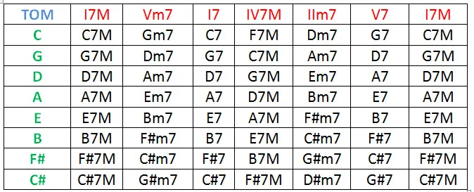

<ion-header [translucent]="true">

  <ion-content class="my-custom-background" [fullscreen]="true">
  
    <link rel="preconnect" href="https://fonts.googleapis.com">
  <link rel="preconnect" href="https://fonts.gstatic.com" crossorigin>
  <link href="https://fonts.googleapis.com/css2?family=Rock+Salt&display=swap" rel="stylesheet">
    <ion-header collapse="condense">    
  </ion-header>

    <div class="colored-div">
      <h1 class="musicalia">Musicalia</h1>
      <h3 class="musicalia2">O app do músico!</h3>
       
    </div>

  <ion-title class="textinho" size="large">Introdução - Progressão de Acordes com 7 </ion-title>
  <ion-button class="voltar"  routerLink="../"> Voltar </ion-button> 


  <ion-card class="introoo">
    <ion-card-header>
      <ion-card-title class="till">Progressões acordes com 7 e 7M</ion-card-title>
    </ion-card-header>
  
    <ion-card-content>

      Progressões de acordes com sétima são um elemento fundamental na harmonia de muitos estilos musicais, incluindo jazz, blues, rock e música popular. A adição de uma sétima aos acordes tradicionais (como os maiores ou menores) traz uma sonoridade mais rica, tensa e expressiva, criando uma sensação de movimento e resolução nas progressões.
    </ion-card-content>
  </ion-card>


<h3 class="notas" size=""> Nesse momento, vamos abordar apenas progressões de acordes com 7.Percebe-se que a <em>sétima</em> mudará de acordo com os <em> graus</em> do <em>Campo Harmonico</em> que se está inserida. </h3>
 

<button class="inicio"  routerLink="/gtab16"> Começar teste </button> 

</ion-content>